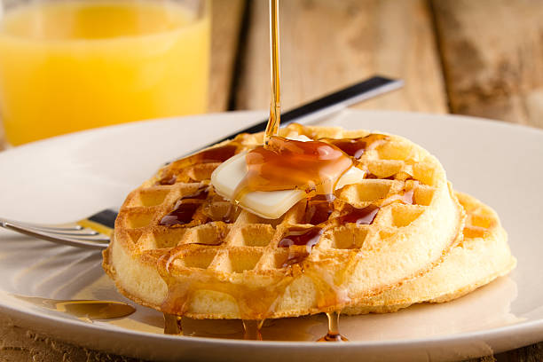

Waffles are a great way to start your day
serves about 5 people
serves about 5 people
Crispy on the outside with a soft, airy interior. Waffles have a slightly sweet taste with a satisfying texture thanks to their grid-like pattern. The crispy edges contrast perfectly with toppings like syrup, whipped cream, or fruit, making for a hearty yet light breakfast treat.